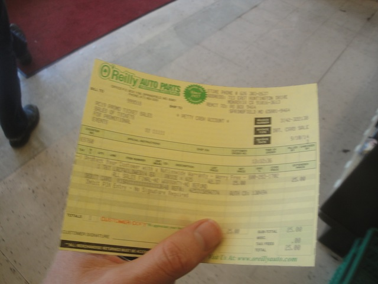
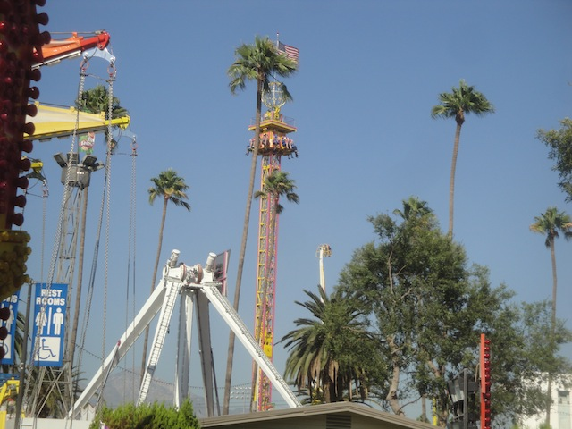
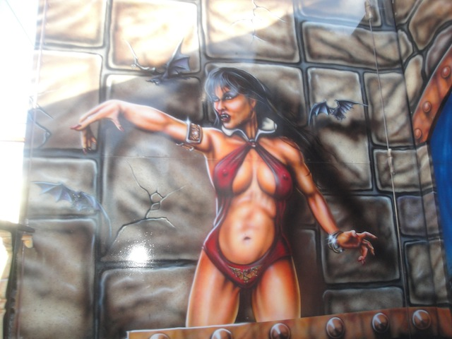
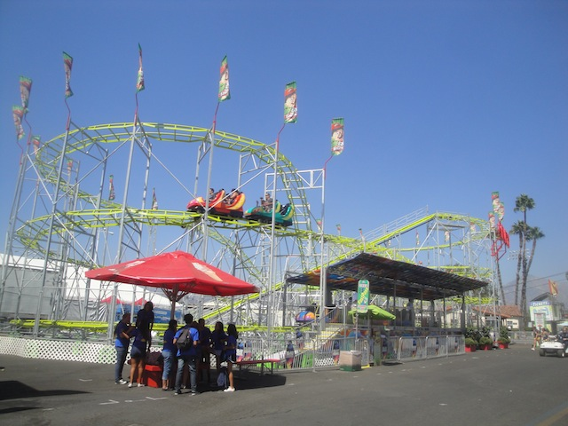
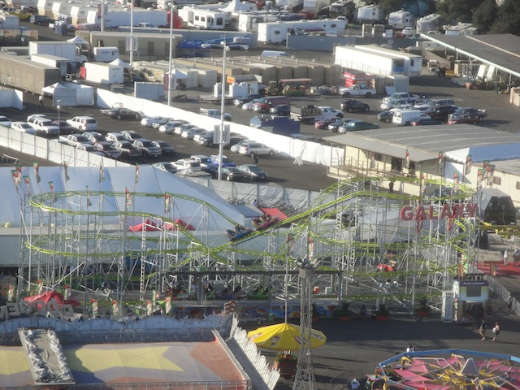
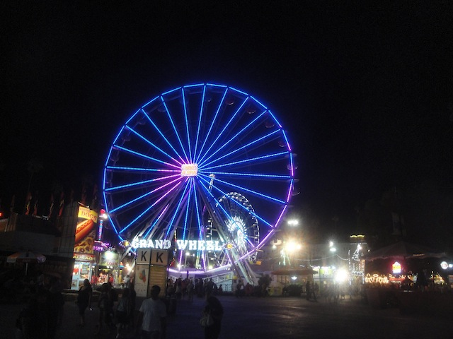

All right. Its time for our yearly fair visit at the L.A County Fair. This was another successful year at the Fair with lots of rides and fun. And we started out with lunch at Sonic, cause apparently there's a lot more in California than I originally thought, which is good since I really enjoyed it back in Texas.

Quick little tip for anyone who plans on going to the L.A County Fair. Go to O'Reilleys and get your ticket and unlimited wristband for only $25. It's a great deal and saved me a ton of money. I just wish I found out about this last year when I took my half-assed visit to the fair last year and didn't do much to save money due to being on financial lockdown. I'm still in financial lockdown and I managed to get on everything this year, plus I spent just as much money last year as I did this year. Much smarter visit to the fair.
*sniff* But how else will I compensate for my small penis and protect myself from thugs with Iced Tea? =(
Yay!!! We made it to the L.A County Fair!!!
Just what I've been waiting all year to ride!! The L.A County Fair Log Flume!!!
Of course, you all know that the real reason we came here was for Tango, easily one of the best flat rides ever made.
While on Tango, something interesting happened. My GoPro was in Codys zippered pocket, except Cody didn't bother to zip it up. Quick tip. ALWAYS MAKE SURE YOUR ZIPPERED POCKETS ARE SECURE!!! I know I'm the paranoid kind who always double checks when getting on a ride. Triple checks when on something really crazy like Tango or DejaVu. Well, knowing Tango and all the crazy flips it does, my GoPro falls out of Cody's pocket and onto the ground. I yell at him for being a dipsh*t, he tells me to relax and that its fine, and sure enough, its fine. Because GoPros are f*cking awesome and super endurable. This thing just fell 60 ft onto a metal platform and those teeny tiny marks are the only damage it ensued. Codys lucky that this was my GoPro which could've handled this and not one of my other cameras, otherwise I would've killed him.
Ooh. DiskO from the Sky Ride.
Ooh. Nice list of people you've got playing. I would've gone to see Heart play, except you have to pay for the concerts here, and I am not in a financial situation to be going to concerts at the moment.
Those who misbehave must be subjected to three hours in the hamster ball.
Ooh. Anybody else wanna go for a camel ride?
"Ugh. You of all people? Forget it. I'd rather have ISIS riding me."
Where do I apply for this job?
I love El Loco. =)
"If I can't find someone to deep throat, I'll just have to settle for the next best thing."
Fall!!! Fall!!! Fall!!!
Judging from all the candy you're missing, you've already been caught Gingerbread Man.
Thanks for bringing the sharks out just for us.
And since we have a carousel enthusiast with us today, we had to take multiple spins on the Carousel.
Giddy Up!!!
This stage is much more fun when Andrew W.K is performing.
Nice Porcupine. I want to pet the porcupine.
Yep. The time has come for another round of Mojo's Monkey Mania. =)
Can I please just run straight into the fountain?
Is that camel actually dead or is it just playing dead to try and avoid us?
Stupid Emu who tried to eat my camera. =)
Well, we saw the owls. Alisa's day has been made.
Again, I am really not a fan of these types of slides.
If a carousel is in sight, it must be ridden. End of story.
That's enough exhibits, animals, and tame rides. I wanna do something extreme!!!
After riding the crappy version at Power Park, I only appreciate Speed even more.
SPEED IS GOOD!!! SPEED IS GOOD!!! SPEED IS GOOD!!!

Holy Crap!! Mega Drop is MUCH stronger than I remembered 2 years ago. =)
Sure. Why not take a ride on the Star Flyer?
You know what? After thinking about it and riding many great starflyers, I'm revoking this rides Star Flyer Privelages. You're no longer a Star Flyer unless you're at least over 100 ft. Otherwise, you're just elevated chairswings.
Crazy Coaster (we did not ride it) from the L.A County Fair Elevated Chairswings.
I can wait on the Zipper. I'd rather wait for the Santa Barbara Fair where it runs so crazy that it becomes my favorite flat ride of all time.
Don't feel bad for these horses. They're one of the few lucky employed horses.
Dalmation!!!
In tradition of riding sh*tty fair dark rides, we take a spin on the (Not) Creep Show.
Yes, this ride is so bad that even the animatronics are trying to escape.

"Why Ms. Panting on the Wall. You're trying to seduce me!!"
You're in luck. Lots of these idiots are illiterate, so you'll get your wish.
"All right. Which one of you guys read the sign?"
The food isn't real. ='(
And of course, we have to take a spin on the Giant Wheel from the L.A County Fair.
I love the view of the L.A County Fair from the Giant Wheel.
One of these days, I'm gonna finally try that damn doughnut burger.
Sadly, I was not able to try a new deep fried food at this years fair because...money. Financial Lockdown won't let me justify spending $8 for Deep Fried Doritos. Oh well. I'd still much rather give up my deep fried food than give up my wristband like I did last year. Much smarter move.
*sniff* I miss Perilous Plunge. =(
Ok. That's enough doddling around. We gotta get on Tango again!! =)
I don't get all the pussies who say that this ride hurts. Just get on it and enjoy the insanity. =)
Still not convinced, then check out this raw footage video, complete with a POV to show off the insanity.

New at the L.A County Fair this year was Galaxi.

I was excited to get a new credit at the L.A County Fair, but then I heard that this was just Backdraft from the Ventura County Fair WAY back in 2005. But after riding this one, I'm still not sure. It might be a different ride, or it might just be a painted and renamed Backdraft. I don't know. All I do know is that when in doubt, always air on the safe side of "Not a new Credit".
All I know is that if this really is Backdraft, then its MUCH better than I remembered it with a few pops of actually decent airtime.
I also don't remember this Wipeout ride being here in previous years. But its fun. =)
Ooh. Speed at night.
Man, I'm really lucky today with single riders!! =)
These rides are much more fun when you don't have three people squished in one car.
I really enjoyed RockIt much more when I don't have have to fish out 9 freaking tickets to ride.
All right. If I was annoyed by anything at this years fair, its the inconsistancy with the names. Backdraft is now Galaxy, RockIt is now Experience, Speed is now Mach 1, and the Moscow Circus is now the Fun Factory. Whatever, not a big deal.
Moscow Circus is still the best funhouse here.
That spiral slide is much faster than you'd think. =)
I really wanted to see all the pretty lights in there, but...money.

Well, another year at the L.A County Fair has come and gone. I'm really glad that I got to ride Tango as well as all the other crazy flat rides this year and hope next year is even more insane.